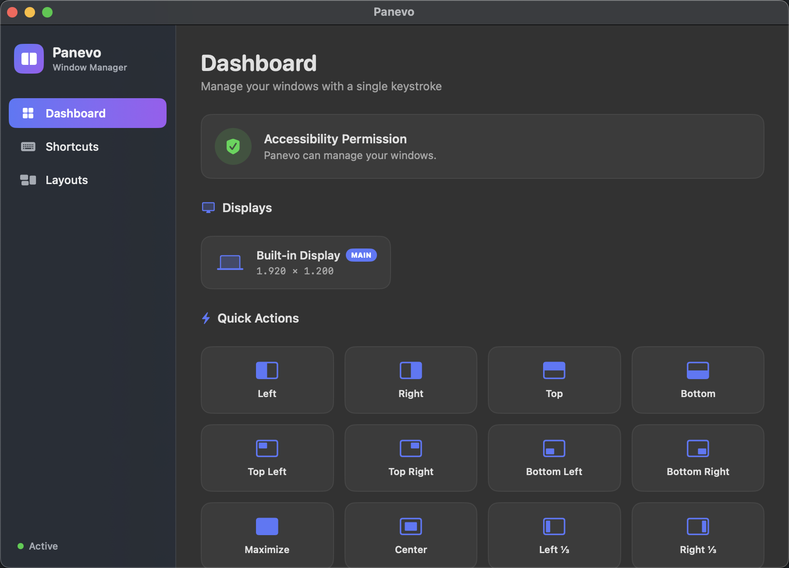

A free, open source, native window manager for macOS. Manage your windows with a single keystroke.
✅ Notarized by Apple🔓 MIT Licensed🇬🇧🇹🇷 EN & TR
or brew install --cask bkrdmrcioglu/tap/panevo

Halves, quarters, thirds, maximize, and center — with adjustable gaps between windows.
Snap from any app. Rebind every action in-app, with automatic conflict detection.
Drag a window to any edge or corner and release. A live preview shows exactly where it lands.
Press again to cycle half → third → two-thirds. One key returns the window to its original size.
Save your entire window arrangement and restore it later — missing apps are launched automatically.
No Dock icon. Lives quietly in your menu bar with quick actions one click away.
| Shortcut | Action |
|---|---|
| ⌃⌥ ← / ⌃⌥ → | Left / Right half (press again: ⅓ → ⅔) |
| ⌃⌥ ↑ / ⌃⌥ ↓ | Top / Bottom half |
| ⌃⌥ ↩ | Maximize |
| ⌃⌥ C | Center |
| ⌃⌥ ⌫ | Restore original size |
| ⌃⌥ N / ⌃⌥ P | Move to next / previous display |